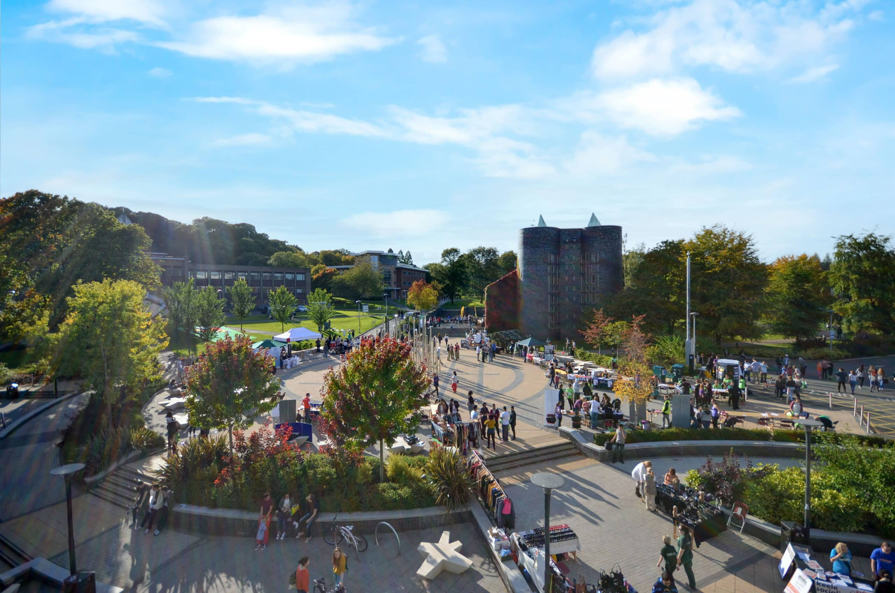

There is nothing more satisfying than solving a tough problem...
Welcome to my personal website, where I will introduce myself and display my portfolio of my most recent programming projects. Everything you see now was created from scratch using HTML, CSS and a bit of JavaScript. Additionally, the webpage reacts dynamically to the smaller screens of mobile devices, for example by turning off the parallax effect. I am a strong believer of always learning new things, which is why I will continue to update and improve this website as my scripting skills develop and my portfolio grows!
William Lycett
MY SKILLS
Python
Java
HTML
CSS
JavaScript
SQL
Below are my most recent projects.
Click on the links to go to their GitHub pages.
A Python application that automatically decrypts Caesar ciphers using frequency analysis.
View on GitHubA Python-based race simulation system allowing customisation of drivers, teams and circuits.
View on GitHubA responsive portfolio site built from scratch. You're seeing it now!
View on GitHubA tool for predicting bird migration data for the next year. Created for my A-Level NEA.
View on GitHubFeel free to get in touch!

Keele University, Newcastle-Under-Lyme, UK
+44 7396 374259
w.lycett100@outlook.com
Leave me a message: